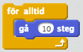
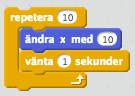
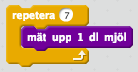
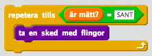

En typ av algoritm som upprepar instruktioner flera gånger
Vissa instruktioner behöver upprepas flera gånger, men det är jobbigt och onödigt att skriva dessa instruktioner flera gånger. Dessutom kanske du inte vet hur många gånger de behöver upprepas. Då kan du använda dig av en loop för att upprepa instruktionerna. Datorn är nämligen väldigt bra på att upprepa saker.
Loopar kan användas för att bland annat
Hela tiden flytta sprajter på spelplanen
Vänta på att något ska hända
Göra något ett antal gånger

Vardagsexempel
Tänk dig att du ska steka pannkakor och det står i receptet att du ska blanda i 7 dl mjöl i smeten. Du har bara ett decilitermått att använda sig av så för att kunna genomföra receptet behöver du använda decilitermåttet sju gånger. Därför blir algoritmen att du repeterar instruktionen "mät upp 1 dl mjöl” sju gånger.

Tänk dig att du har en algoritm som går ut på att äta fil och flingor till frukost. Du har en instruktion till dig själv som är att använda en sked att ta upp maten med och sedan föra den till munnen. Vanligtvis så kommer du inte bli mätt på en sked fil och flingor och det är kanske svårt för dig att veta hur många skedar du behöver äta. Då kan du repetera instruktionen som för över frukost till munnen tills du är mätt.
